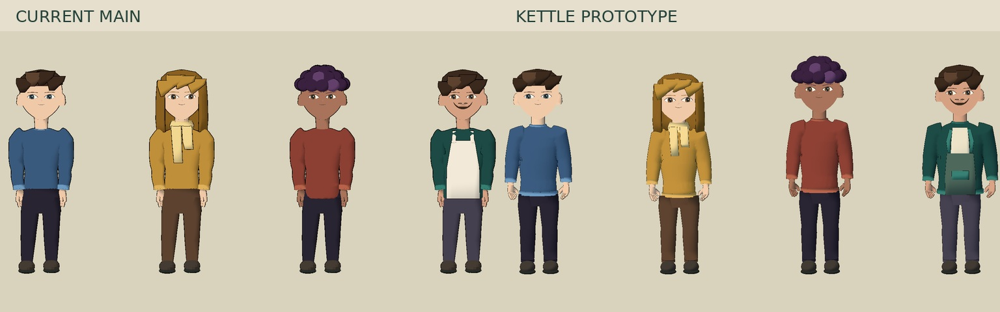
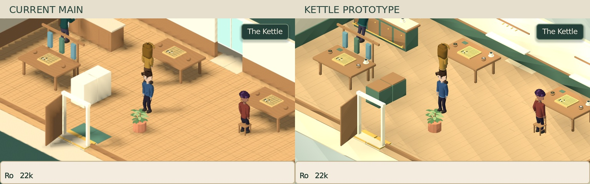

NINEPOINT · ART-14 · OPTIONAL PRESENTATIONThe Kettle, with room to breathe.
Rebuilt bodies and hands, relaxed jogging, purposeful counter work and warmer room lighting. Original faces, characters and gameplay. Every film plays at normal speed.
Playable room → conversation → match
tools/play_kettle_next.sh opens a disposable preview save. Add --baseline for current main.
Cast: same camera, before and after
Actual movement, stopping and input locks
Matched views


Prototype scope: Ro, Wren, Kesh, Tomás and The Kettle. Full-campaign rollout follows a separate visual review. Technical evidence and limitations.